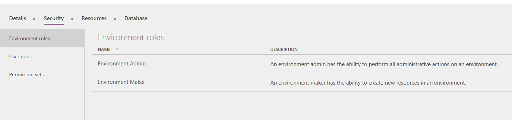
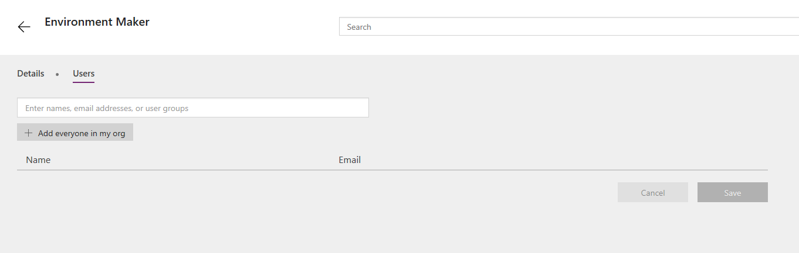
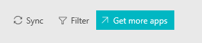

Human Resources wird nicht in Microsoft Dynamics 365-Apps angezeigt
Abgang
Der Kunde sieht Dynamics 365 Human Resources nicht bei den Microsoft Dynamics 365-Apps.
Lösung
Der Benutzer muss der Umgebungsersteller-Rolle für die Umgebung in Microsoft Power Apps hinzugefügt werden.
Der Administratorbenutzer, der eine Power Apps Plan 2-Lizenz hat, muss das Power Apps-Administratorportal öffnen.
Wählen Sie Umgebungen aus, und wählen Sie die richtige Umgebung für Human Resources aus.
Wählen Sie auf der Registerkarte Sicherheit auf der Registerkarte Umgebungsrollen die Option Umgebungsersteller aus.

Fügen Sie auf der Registerkarte Benutzer den Benutzer oder Ihre Organisation hinzu.

Wählen Sie Speichern.
Der Benutzer muss sich jetzt bei Microsoft Dynamics 365 anmelden.
Wählen Sie Synchronisieren aus, m die Benutzer-Apps zu aktualisieren.

Nachdem die Synchronisierung abgeschlossen ist, wird Human Resources auf der Startseite angezeigt.